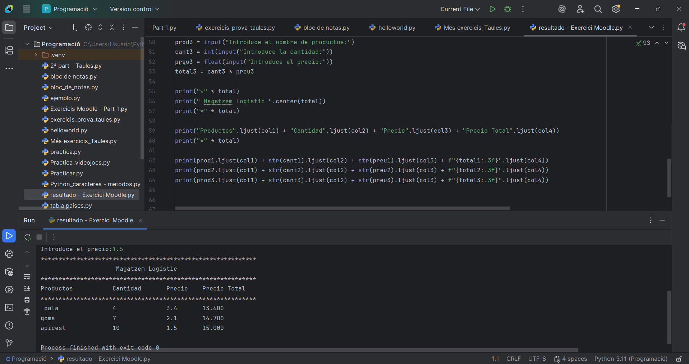

Projectes
Aplicació de gestió de tasques
Un projecte fet amb Python que permet crear, editar i eliminar
tasques d'una llista, guardant les dades en un fitxer.

Altres projectes
- Aplicació de gestió de tasques.
- Joc desenvolupat amb Python.
- Pàgina web personal.
Passos seguits en un projecte
- Analitzar els requisits.
- Dissenyar l'estructura del codi.
- Programar les funcionalitats.
- Provar i corregir errors.
- Publicar el projecte a GitHub.